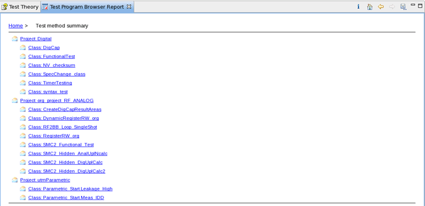
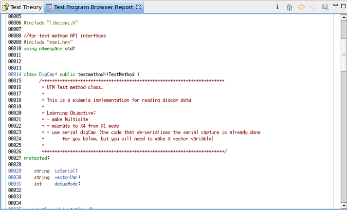

Test methods report
On the home page of the Test Program Browser report, click the hyperlink in the Test method row. The report that lists all test methods in your test program is displayed.
Note If a test method is not shown in the report, compile that test method
again with SmarTest.

Click a test method hyperlink in this report. The test method source code is displayed.

Functional changes
- Introduced in SmarTest 7.2.2